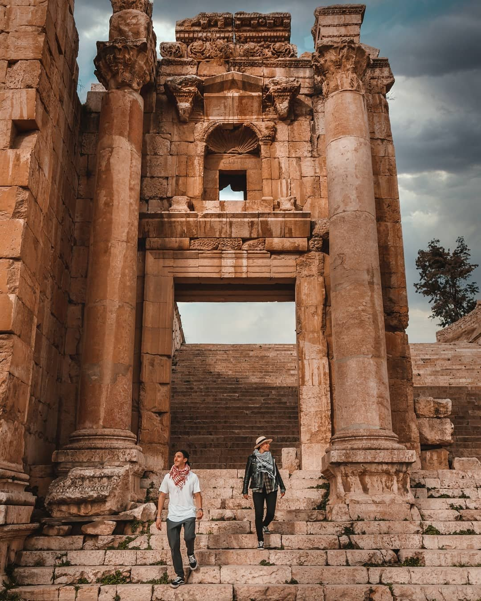

There is a lot of activities you can do while visiting Jerash such as:
- Visiting the Archaeological Site of Jerash
- Visiting AL MA’WA RESERVE FOR NATURE AND WILDLIFE
- Visiting RANGER ADVENTURE CAMP
- Visiting DIBBIN FOREST RESERVE
Best Hotels in Jerash:
- Full Panorama JERASH
-Located in Jerash, 400 m from Jerash and 700 m from Jerash Ruins.
-Mountain view - New Luxurious Modern Studio
-Located in Jerash, 2.1 km from Jerash.
-Mountain view/ City view - ODIBAT STUDIOS
-Set in Jerash in the Jerash Governorate region.
-Mountain view/ City view - The Blue House "Gerasa”
-situated in Jerash, 1 km from Jerash.
-Mountain view/ City view
